Destinations / National Parks
Five national parks cover nearly 8% of Montenegro's territory — from glacial peaks and ancient rainforests to the Balkans' largest lake. This is nature at its most unhurried.
A UNESCO World Heritage massif that rises above the town of Žabljak, Durmitor is Montenegro's most dramatic landscape. Eighteen glacial lakes — the deepest of which, Black Lake, mirrors the surrounding pines and limestone cliffs — dot a plateau carved by ice over millennia. The Tara River Canyon, the second deepest in the world, cuts along its edge like a wound in the earth. In winter it's a ski resort; in summer, a kingdom for hikers, rafters, and anyone willing to stand at 2,523 m on Bobotov Kuk and feel genuinely small.
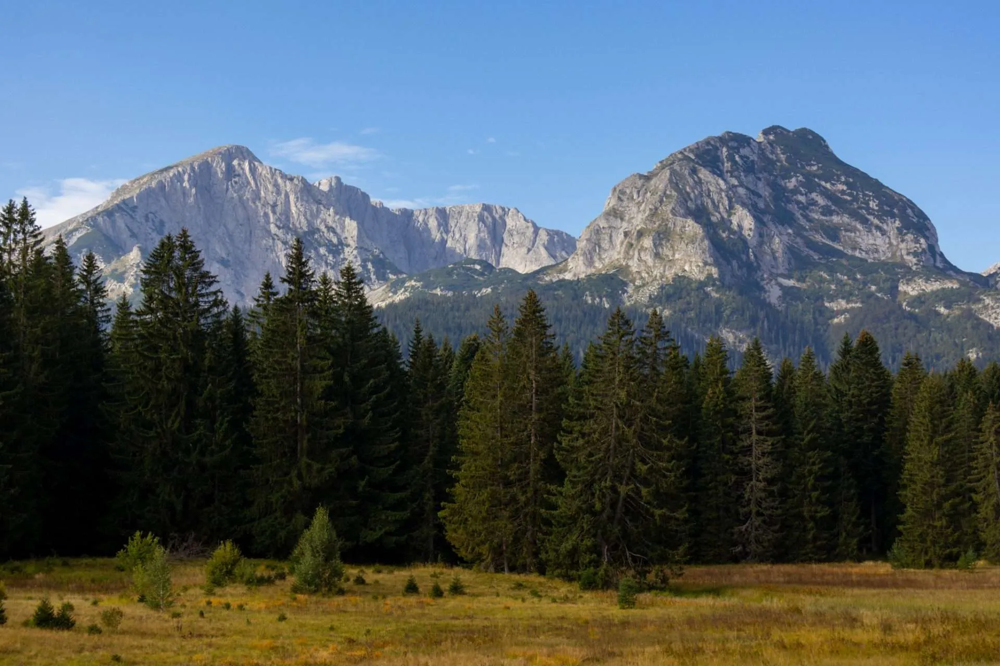
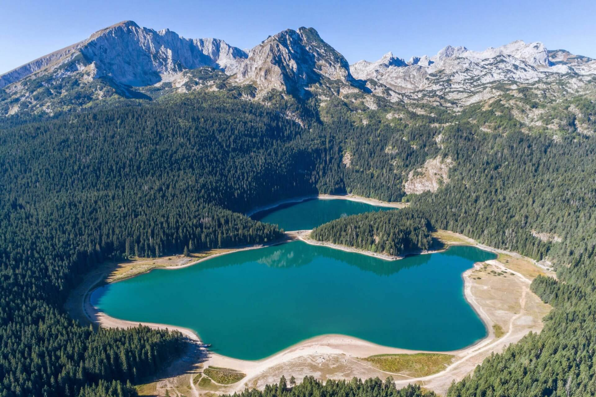
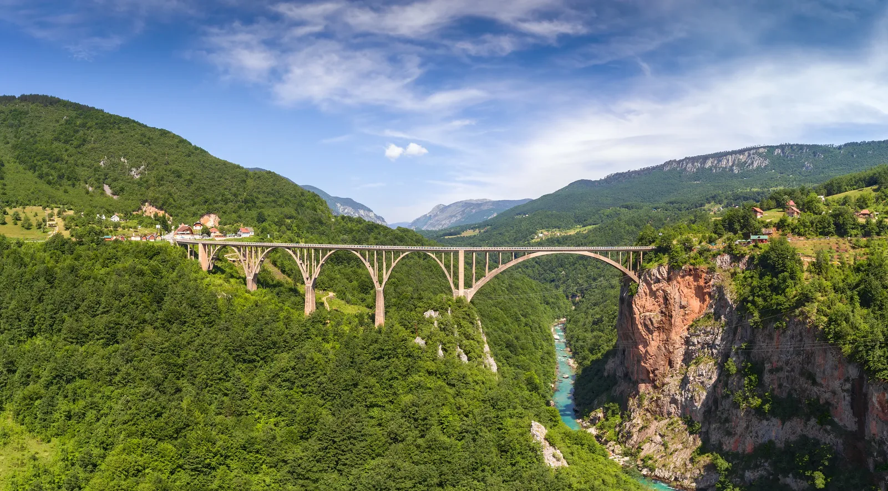
Tucked between the Tara and Lim rivers in the heart of the Bjelasica mountains, Biogradska Gora protects one of the last three primeval rainforests in Europe — some trees here are over 500 years old and have never felt an axe. At the centre of it all sits Biogradsko Lake, a glacial mirror fringed by beech, spruce, and fir. The park was first protected in 1878, declared a royal reserve as a gift to King Nikola — and the silence inside it still feels like something reserved for kings.
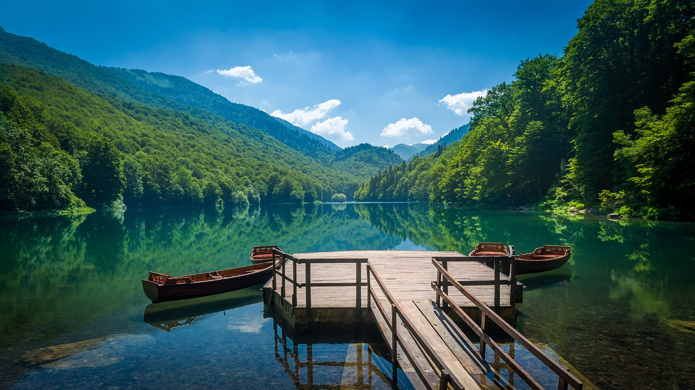
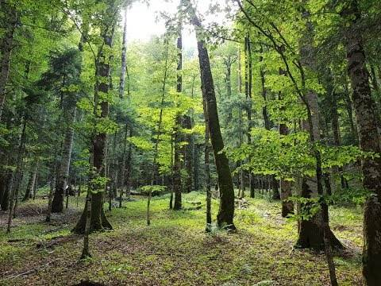
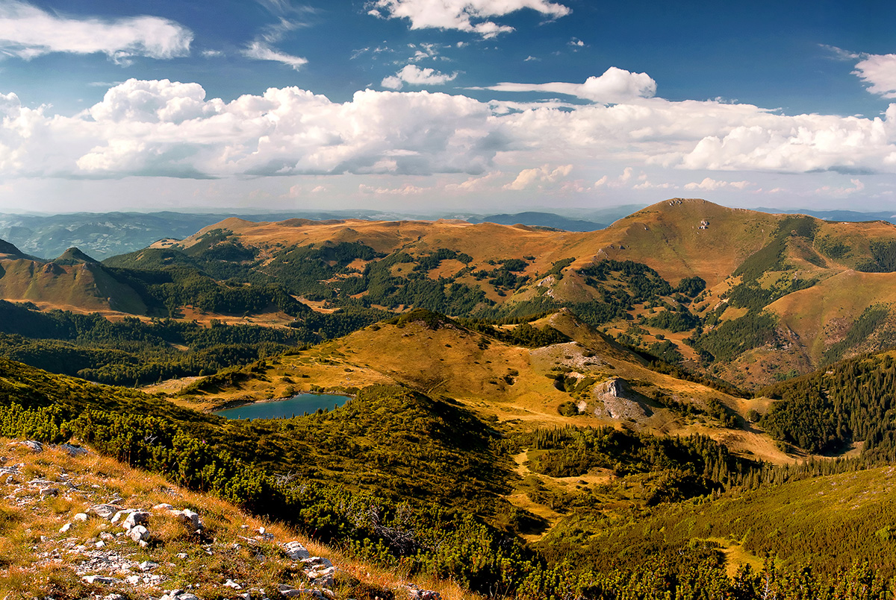
Lovćen is Montenegro's spiritual mountain — the "Black Mountain" that gave the country its very name. Rising sharply above the Bay of Kotor, its rocky slopes have been the historical stronghold of Montenegrin identity for centuries, a fortress of resistance against Ottoman rule. At the summit of Jezerski Vrh (1,657 m), reached by 461 carved stone steps, stands the mausoleum of Petar II Petrović-Njegoš — philosopher, poet, and bishop — one of the most stirring monuments in the entire Balkans. The views from the top stretch across the Adriatic to Italy on a clear day.
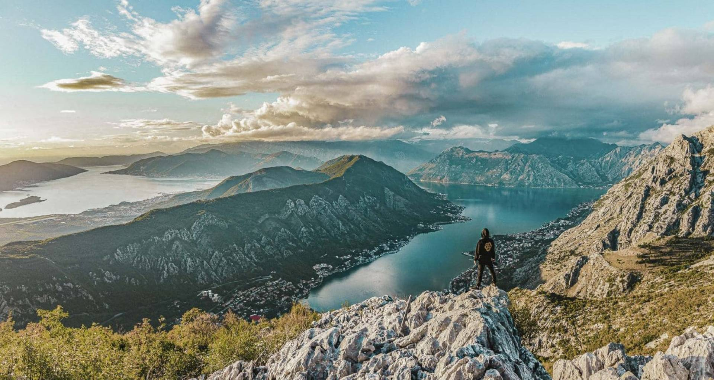
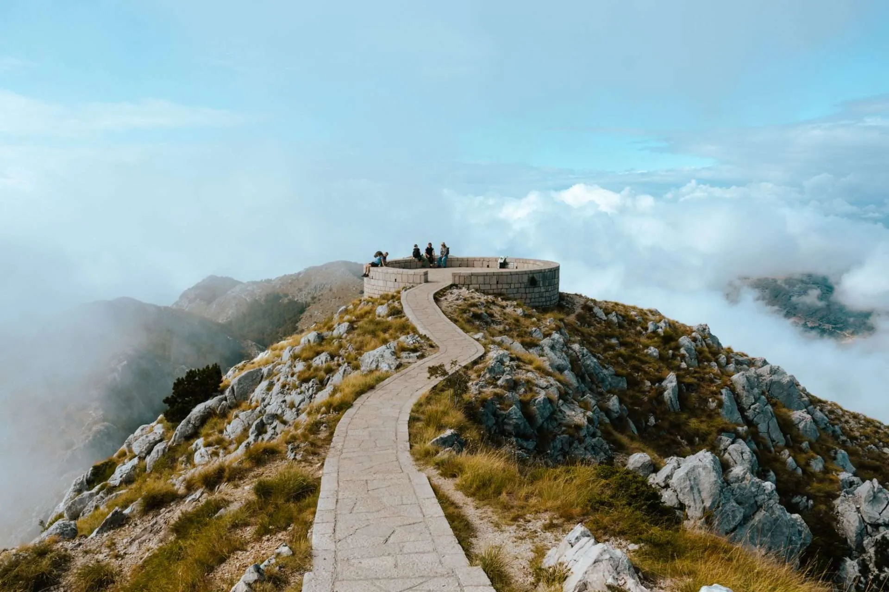
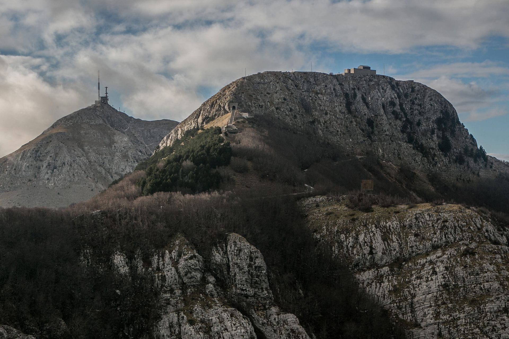
The largest lake in the Balkans stretches across the border between Montenegro and Albania, its surface shifting with the seasons — vast and silver in winter, carpeted in white and yellow water lilies come summer. The lake shelters 281 recorded bird species, making it one of Europe's most important ornithological reserves; Dalmatian pelicans nest here in one of their last European strongholds. Wooden fishing boats drift between half-submerged monasteries and fortresses that rise straight from the water. It's a world that moves slowly and on its own terms.
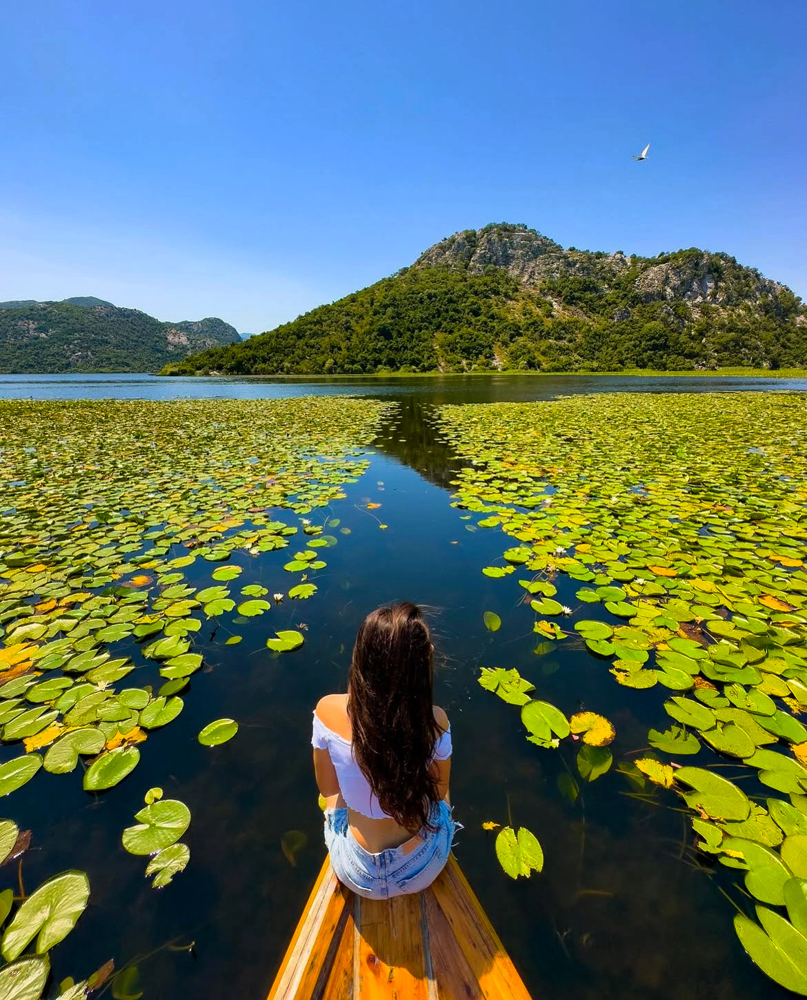
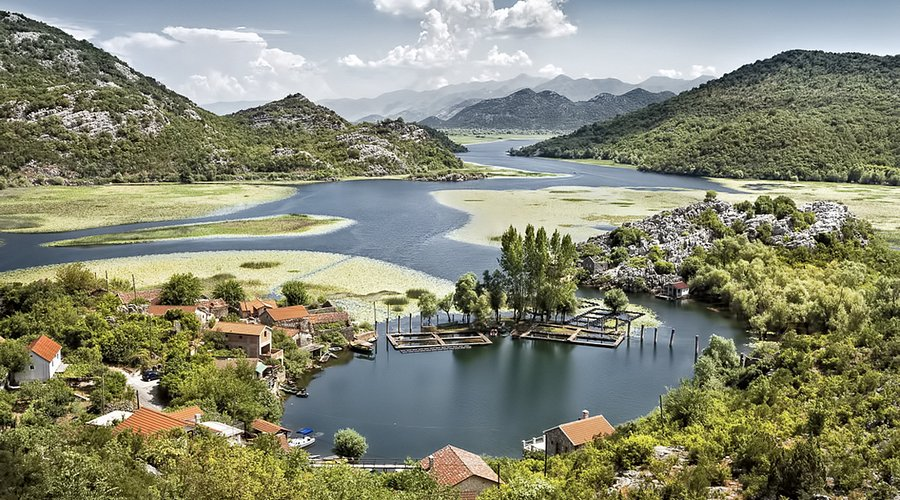
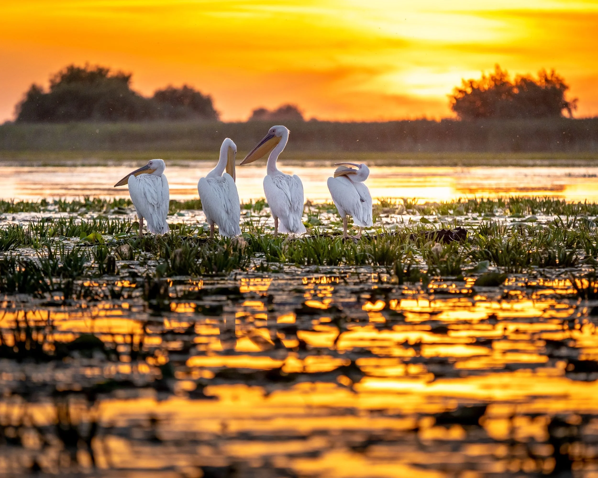
The Prokletije, also known as the Accursed Mountains, are one of the most dramatic and rugged mountain ranges in Southeastern Europe. They form part of the Dinaric Alps and are characterized by sharp limestone peaks, deep valleys, and remote alpine landscapes that remain among the least explored areas in the region. The mountains are known for their extreme relief, with some peaks rising abruptly from narrow valleys, giving the area an almost untouched and wild appearance. Dense forests, glacial lakes, and fast mountain rivers add to its natural beauty and ecological importance.
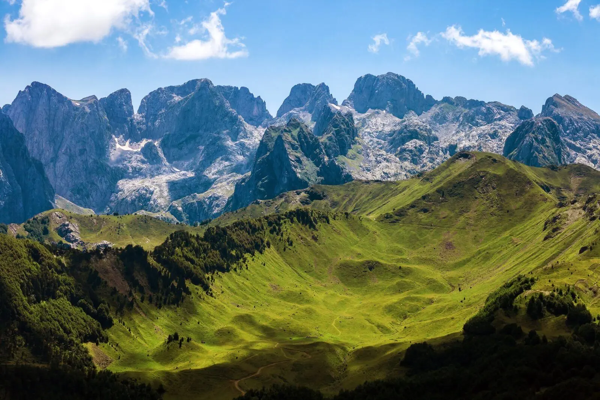
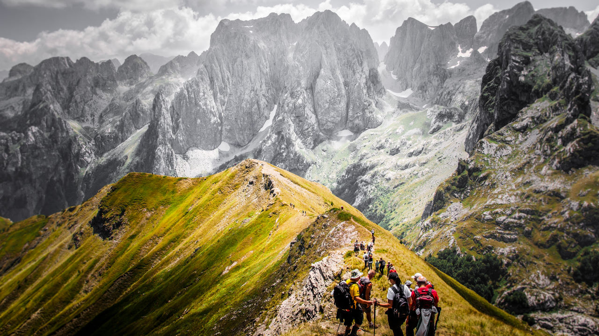
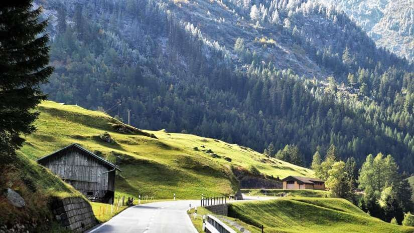